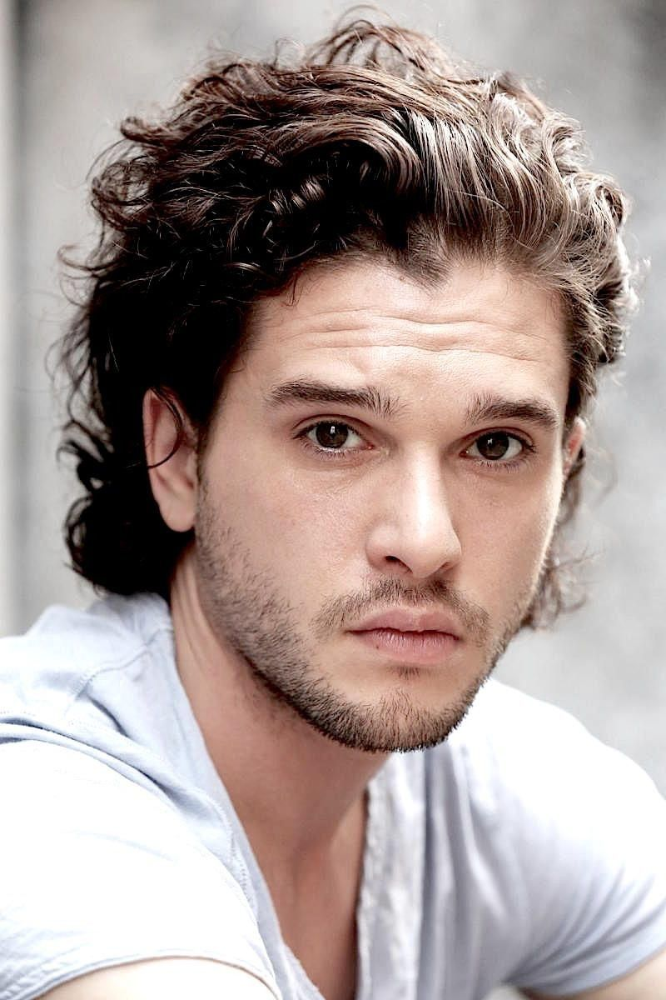
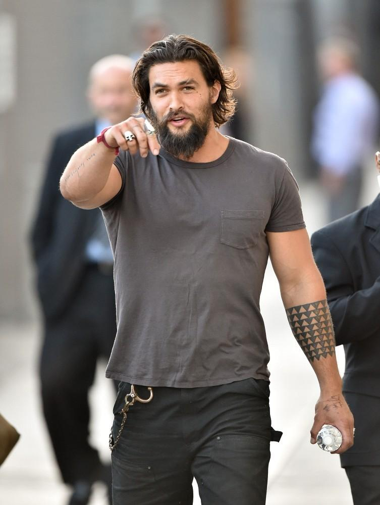

Если вас природа наградила красивыми волосами,
можно и рассматривать стрижки на длинные волосы.
В 2019 году в тренде длинные мужские стрижки на основе каскада
и у кладка — творческий беспорядок, которая придаст дерзости и оригинальности образу.
Каскад очень удобен в носке и придает волосам объем и естественность.
Не теряет своей актуальности в 2019 году и мужская стрижка каре,
волосы стригутся в одну длину и эта длина позволяет
без проблем делать ультра модную прическу пучок или хвост.
Каре идеально сочетается с вьющимися волосами.
Прическа с пучком («man ban»), идеально сочетается с длинными волосами или «undercut»
и в 2019 году в тренде выбритая височная область («top knot»), в стиле самураев.
При этом часть или все свободные волосы собираются в хвостик на макушке или на затылке,
из которого может быть сформирован узел.
Простой мужской хвостик не требует много времени для его создания и его совсем не сложно сделать,
любой может носить эту прическу в своей зоне комфорта.
Мега круто смотрятся собранные на макушке волосы в сочетании с бородой.